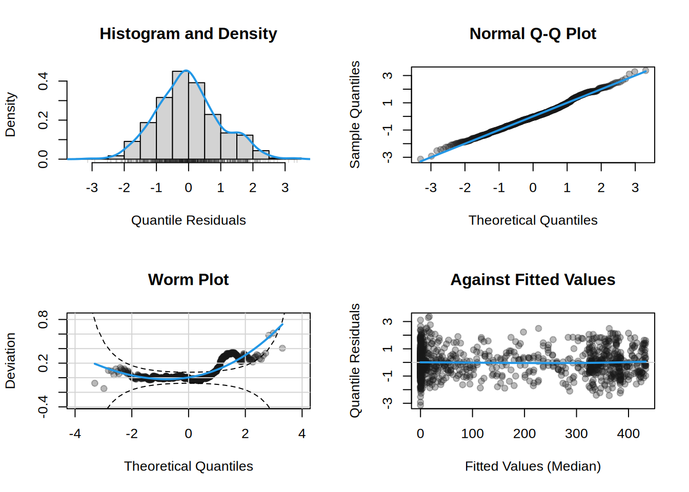

library("gamlss2")
## seasonal variation of motorcycle counts at Sonnenberg/Harz
data("HarzTraffic", package = "gamlss2")
plot(bikes ~ yday, data = HarzTraffic)## count distribution
barplot(table(HarzTraffic$bikes))## negative binomial seasonal model using cyclic splines
m <- gamlss2(bikes ~ s(yday, bs = "cc") | s(yday, bs = "cc"),
data = HarzTraffic, family = NBI)GAMLSS-RS iteration 1: Global Deviance = 10163.082 eps = 0.148402
GAMLSS-RS iteration 2: Global Deviance = 10151.144 eps = 0.001174
GAMLSS-RS iteration 3: Global Deviance = 10151.1409 eps = 0.000000 ## visualize effects
plot(m)## residual diagnostics
plot(m, which = "resid")
## fitted parameters for each day of the year
nd <- data.frame(yday = 1:365)
par <- predict(m, newdata = nd)
## corresponding quantiles
p <- sapply(c(0.05, 0.5, 0.95), function(q) family(m)$q(q, par))
## visualization
plot(bikes ~ yday, data = HarzTraffic, pch = 19, col = gray(0.1, alpha = 0.3))
matplot(nd$yday, p, type = "l", lty = c(2, 1, 2), lwd = 2, col = 4, add = TRUE)